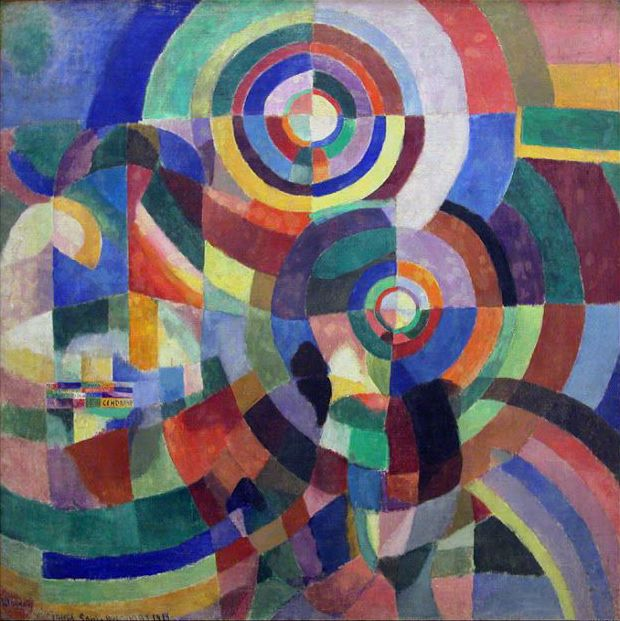

places I like to go
When I'm at home, I usually want to leave; when I'm out, I often want to go home!
places I don't like to go
- the mall
- TJ Maxx
TJ Maxx, for reasons I have probably already looked up but since forgotten, is called TK Maxx in the UK. Huh.
- Alaska
places Michael likes to go
He's always stuck at home so you'd never guess Michael has other favorite places!
- parks
- beaches
- bridge club
- the grocery store
- places he used to go on okcupid dates
places Michael doesn't like to go
- museums
- malls
- the homes of old people he doesn't know, especially when they only speak Ukrainian
Prismes électriques, 1914">
YUCK!